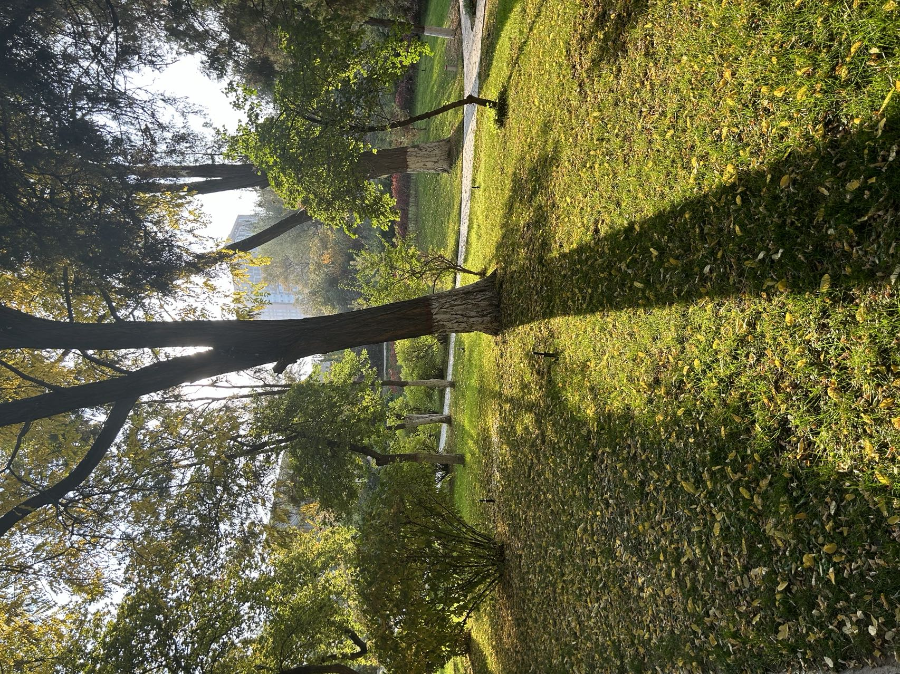

写在前面
刚刚建站，本篇是为了充实内容，也是无聊消遣一下，没啥营养
Recent
本来以为自己也是一个比较宅的人，可现在发现自己错了，被封不到一周就开始出现消极情绪，整个lz的单日新增破千，学校里也闹个不停，宿舍楼分南北，在南，而北边的朋友已经有一多半被拉到方舱了，根本看不到希望。
想回家，但无奈要给lzu老师干活，还有两三门考试，还还有不知道能不能正常进行的CET6，还还还有每周的深研院的组会汇报。。。一方面是自作自受，谁让自己去年造孽太多了。另一方面因为自己闲了容易摆烂，总是忍不住给自己揽一堆活，整个大学如此。即使推免了如此。
一首歌度日
最近歌单里面的歌很多都能循环一天，不知道为啥就突然都听不腻了，感觉自己已经魔怔了。还好状态不错，大概两天读一篇paper，比较重要的，有意思的会去复现一下，循环了一个多月，感觉提升确实挺快，节奏也能适应，相信应该能达到这一年给博导立的flag。忍不住提一句，我导是真的好啊，要啥有啥，也不push，非常尊重学生想法，绝对是理想导师，后面有机会细说。
最近奖学金也有小几千，嘿嘿，趁着steam折扣又入库了几个游戏玩了一下，cod14,star war II，美其名曰，感受传统CG的魅力😏
金秋(封前)

晚秋(封后)
上周末砖家开恩解了一天让去洗澡，报复似的在学校晃荡了一个下午+晚上，和一个多月前的相比，秋意逐渐褪去，萧瑟了很多。。。。。。。。。。。。。。。。。。。。。。。
还是要多出去走走，从小城出来，说的话太少，情商阅历一直是自己的短板，要逼一下自己去接触这些，不然总会让自己留下无法挽回的遗憾☹️
永远妖妖
想要的不多，能够每天在校园里听着音乐散散步，静静的感受一下自然，但现在却成了奢求。总之，还是逆来顺受吧，从家乡一路走来，承载着很多寄托，正在一步一步打开自己的枷锁，忍此一时，期待春天！
This is copyright.